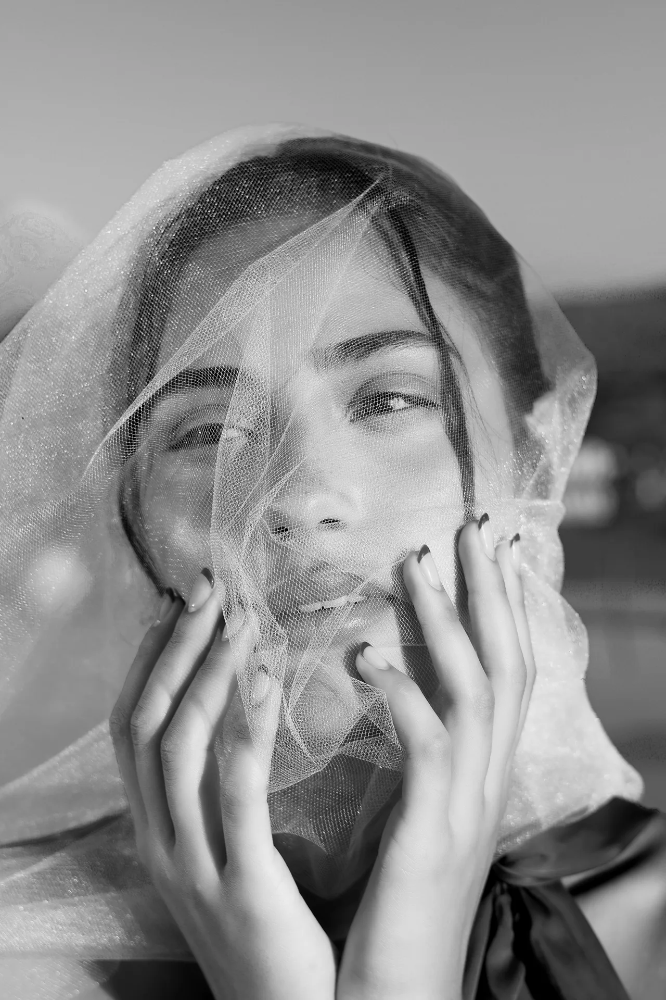

01 // RETRATO PURO
[ LA VERDAD DEL SUJETO ]
HONESTIDAD EN —
HONESTIDAD EN —
CADA MIRADA
"El retrato de autor no persigue una pose forzada ni un artificio digital; rescata el silencio, la presencia genuina y la fuerza expresiva que habita en los ojos de cada persona."